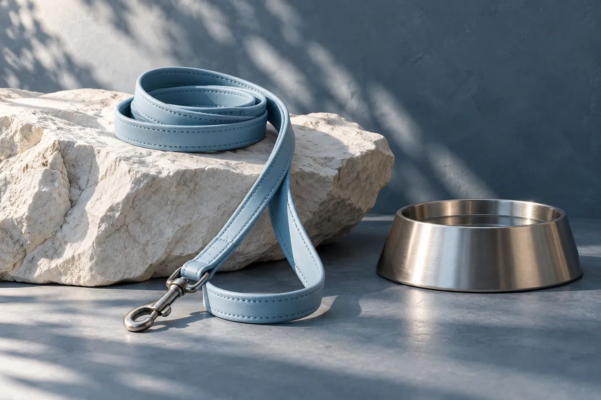
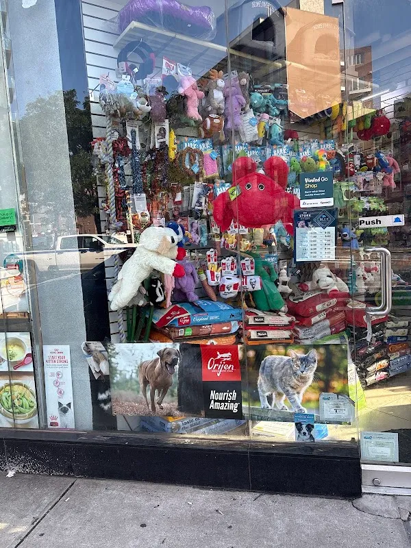
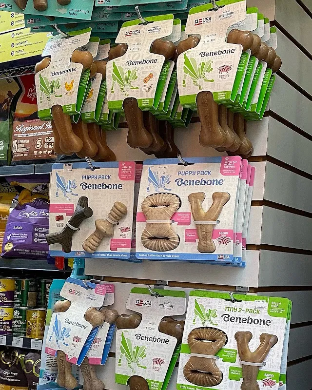

Pet Island.
Daily essentials.
A pet store in Queens. Explore a sample shelf for feeding, walking and play, then ask about the current range.
Explore the pet shelf →10-50 Jackson Ave, Long Island City, NY 11101

A daily routine
Choose the part of your companion’s day you are shopping for. Product suitability comes from the store and manufacturer.
For the next mealExplore the feeding accessory sample and ask the store about actual materials and dimensions.
Explore feeding →Demo selection. Confirm products, prices and availability with the store.
The Pet Island shelf
A sample of how feeding, walking and play can each have a clear place in the collection.


Come by Pet Island
Pet Island is at 10-50 Jackson Ave, Long Island City, NY 11101. Explore the business photographs, then plan a visit or call to ask about the current selection.
Plan your visit →